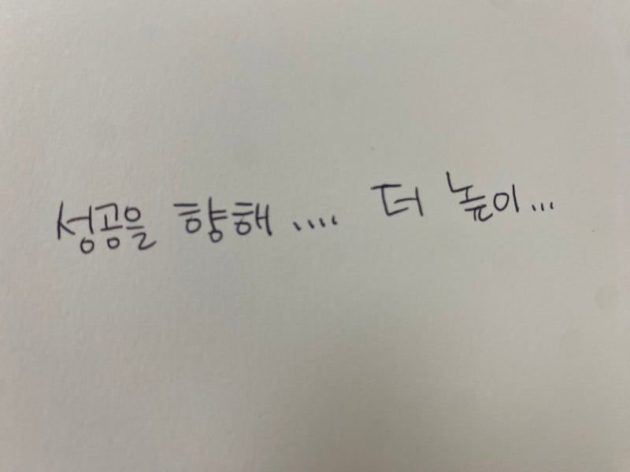
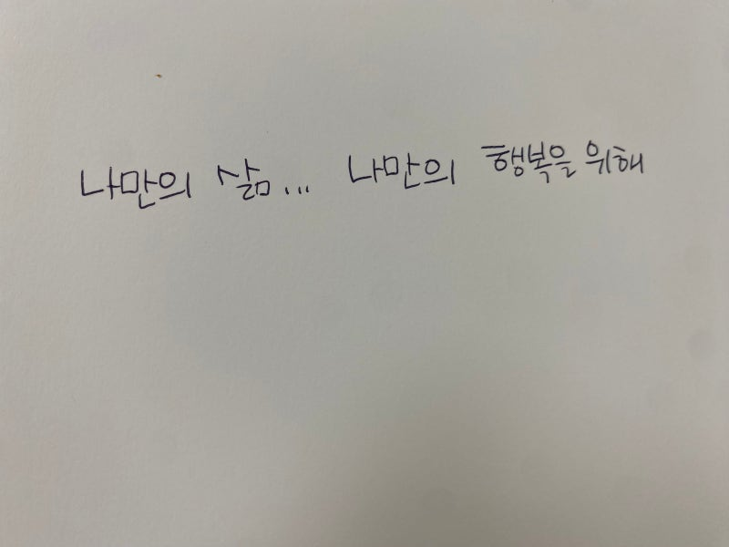
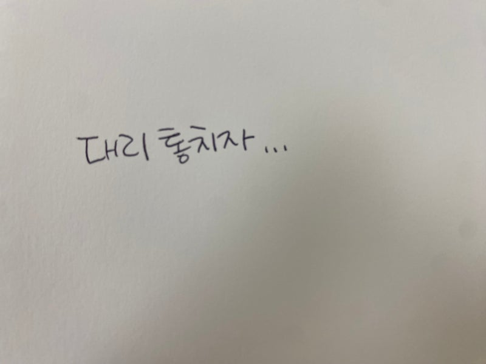
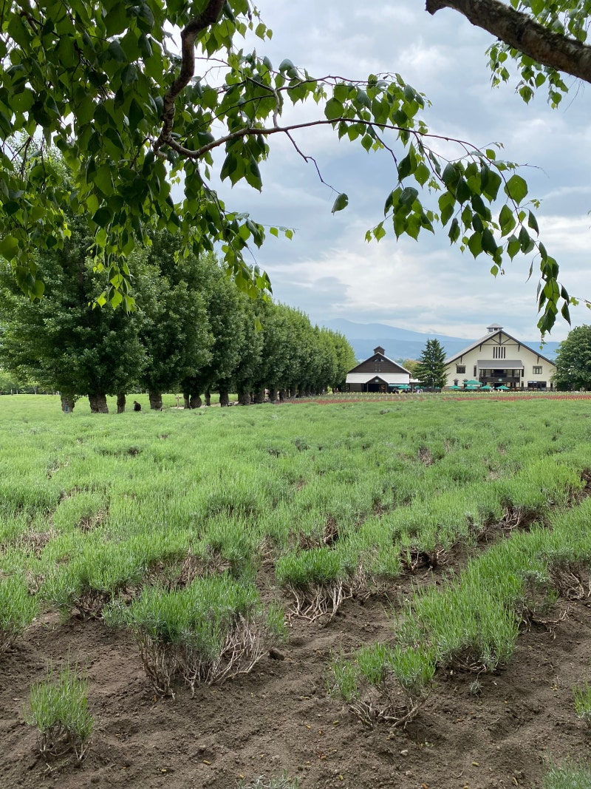

제목 : 내 삶의 진짜 이야기: 나는 왜 늘 공허하고 목마른가? 2025년, 당신은 어떤 삶을 추구하고 있습니까? 지금 이 시대를 살아가는 우리에겐 크게 두 가지 삶의 방식이 있는 것 같습니다. 그리고 우리 대부분은 이 두 길 어딘가에서, 혹은 두 길 사이를 오가며 살아가고 있습니다. 첫 번째는 '더 높이 오르는 길'입니다. 우리는 더 많은 것을 얻기 위해 끊임없이 자신을 채찍질합니다. 어린시절부터 치열하게 경쟁을 해야하며, 좋은 대학과 직장을 목표로 앞만 보고 달려 갑니다. 그리고 그렇게 사회에 나와서는 더 많은 연봉, 더 넓은 아파트, 더 좋은 차를 얻기 위해 고군분투합니다. 이 길의 정상에 오르면 마침내 흔들리지 않는 안정과 만족이 있을 것이라 믿으며, 숨 가쁘게 살아갑니다.

두 번째는 '나만의 행복을 찾는 길'입니다. 첫 번째 길에 지쳤거나, 그 정상에 도달했음에도 채워지지 않는 허탈감을 느낀 사람들이 택하는 방식입니다. 이들은 모든 것을 내려놓고 도시를 떠나기도 하고, 최소한의 일만 하며 자신만의 라이프스타일을 추구합니다. 세상의 기준이 아닌, '내가 만족하는 소소한 행복'이야말로 진짜 인생이라고 믿으면서 말이죠.

그런데 이상합니다. 두 길 모두 그 끝에서 완전한 만족을 찾았다는 사람은 드뭅니다. '더 높이 오르는 길' 위에 있는 사람은 더 큰 것을 욕망하며 여전히 불안하고, '나만의 행복을 찾는 길' 위에 있는 사람은 그 행복이 사라질까 봐 늘 새로운 위안을 찾아 헤맵니다. 왜일까요? 어쩌면 우리가 걸어가고 있는 두 길 모두, 우리에게 진정한 자유와 행복, 만족감을 주지 않기 때문일지도 모릅니다. 지금 우리가 살아가는 세상은우리가 우리 자신의 삶의 주인으로 살아가는것이 너무나 당연한 이야기라고 하며, 그렇지 못한 삶을 깨워서 '스스로의 삶의 주인이 되라'라고 외치는 이 세상의 소리에서... 우리는 힘겹게 하루하루 주인이 아니면서 주인인체 삶을 살아가고 있는것은 아닐까요? 내 삶의 주인공은 나야 나!! 라고 외치는 이 세상의 목소리에...그래서 주인으로 살아서 당신은 정말 행복한가요? 라고 묻는다면....그렇다고 할 수 있는 사람이 있을까요.... 우리는 한 치 앞의 일도 알 수 없는 존재입니다. 우리는 마치 이 세상의 모든것을 다 아는것 처럼. 알 수 있는 것 처럼 살아가지만, 모두 허상입니다. 우리가 알고 있는 것은 너무나 작은 것. 부분에 불과합니다. 그래서 우리에겐 본질적으로 '불안'이 있습니다. 이 불안을 떨쳐내기 위해 각자의 방식으로 고군분투하며 살아갈 뿐 입니다... 이제 우리는 "내 삶의 주인은 나야". 라는 인식에서 눈을 돌려...내 삶은 어떻게 살아야 하는 것인가를 생각해 보는 시간을 가져야 하지 않을까요? 성경은 지금까지 모든 인류에게 과거에도 그러했고... 여전히 오늘을 살고 있는 우리들에게도 "삶은 어떻게 살아가야 하는지", "우리가 어떤 존재인지를" 알려주고 있었습니다. 이제 "내 삶의 주인은 나"라는 무거운 왕관을 내려놓고, 우리 삶이 본래 어떻게 설계되었는지 그 '진짜 사용설명서'를 펼쳐볼 시간입니다. 놀랍게도 그 이야기는 아주 오래전, 성경의 첫 페이지에서부터 시작됩니다.

1. 당신의 진짜 정체성 : 세상의 '대리통치자'하나님의 위대한 창조 이야기 속에서, 우리 인간은 창조주로부터 공식적인 '임무(Commission)'를 부여받았습니다. "하나님이 그들에게 복을 주시며 그들에게 이르시되 생육하고 번성하여 땅에 충만하라, 땅을 정복하라, ... 모든 생물을 다스리라 하시니라" (창세기 1:28) 이 장면은 마치 위대한 왕이 가장 신뢰하는 신하에게 한 지역을 맡기며 "나의 권위와 지혜로 이 땅을 아름답게 가꾸고 다스려다오"라고 위임하는 것과 같습니다. 그렇습니다. '나는 누구인가?'에 대한 첫 번째 대답은 바로 '하나님의 대리통치자(Vice-regent)'입니다. 우리는 이 세상 이야기의 주인이 아니라, 이야기의 작가이신 하나님의 권위를 위임받아 그분의 선한 뜻을 이 땅에 펼치도록 부름받은 존귀한 청지기입니다. 그리고 이 엄청난 임무를 수행할 수 있도록, 창조주는 우리에게 최고의 '장비'를 주셨습니다. 바로 '하나님의 형상'입니다. 이것은 우리가 왕의 성품, 즉 그분의 사랑과 공의, 지혜와 창조성을 반영하며 다스릴 수 있는 잠재력을 가졌다는 의미입니다.

2. 당신의 평범한 일상 : 위대한 '정복'과 '다스림'그렇다면 '대리통치자'의 임무는 구체적으로 무엇일까요? '정복하라'와 '다스리라'는 명령은 거창한 구호가 아니라, 우리의 모든 평범한 일상 속에서 이루어지는 거룩한 활동입니다. 1) 잠재력을 깨우는 '정복(Subdue)''정복'은 파괴가 아닌, 세상의 무질서함에 질서를 부여하고 숨겨진 잠재력을 이끌어내는 모든 창조적인 활동을 의미합니다. IT 개발자가 복잡한 코드로 데이터를 정리해 유용한 앱을 만드는 것.도시 계획가가 버려진 땅을 설계해 아이들이 뛰노는 공원으로 바꾸는 것.과학자가 질병의 원리를 연구해 고통을 줄이는 치료법을 개발하는 것.부모가 아이에게 단어를 가르쳐 세상과 소통하게 하는 것.청소 노동자가 거리를 깨끗하게 만들어 쾌적한 환경을 선물하는 것.이 모든 것이 바로 무질서를 질서로 바꾸는 영광스러운 '정복' 활동입니다. 2) 사랑으로 돌보는 '다스림(Rule)''다스림'은 폭압이 아닌, 맡겨진 대상을 책임감을 가지고 사랑으로 돌보는 '선한 목자의 통치'를 의미합니다. 경영자가 직원을 인격적으로 존중하고 그들의 성장을 돕는 것.교사가 학생들의 재능을 발견하고 올바른 가치관을 심어주는 것.공무원이 공정한 행정으로 사회적 약자를 돕고 안전한 시스템을 구축하는 것.예술가가 음악과 그림으로 사람들의 영혼에 위로와 감동을 주는 것.우리가 이웃의 아픔에 공감하고 작은 친절을 베푸는 것.이처럼 당신의 모든 일상은 하나님의 세상을 가꾸는 위대한 '창조 명령'의 일부입니다. 3. 이야기의 위기 그리고 반전 : 왕의 귀환하지만 인류는 영광스러운 '대리통치자'의 임무를 거부했습니다. 창조주의 뜻을 따르기보다 스스로 주인이 되어 세상을 마음대로 주무르려는 '반역'을 일으켰습니다. 이것이 바로 성경이 말하는 '죄'의 본질입니다.그 결과, 우리는 자격을 상실했고 이야기는 비극으로 치닫기 시작했습니다. 그러나 창조주는 인간을 포기하지 않으셨습니다. 인류 역사 전체를 관통하는 거대한 '구원 서사'를 시작하셨습니다. 그 계획은 여러 예고편을 거쳐 마침내 진짜 주인공이신 예수 그리스도께서 무대 위에 등장하며 절정을 맞았습니다. 예수 그리스도는 반역의 대가를 스스로 치르시고(십자가), 모든 비극과 죽음의 권세를 이기심으로(부활), 우리에게 다시 '대리통치자'의 자리로 돌아올 길을 열어주셨습니다.
4. 당신의 새로운 미션 : 진짜 이야기로의 '초대'이제 예수를 통해 다시 부름받은 우리는 어떤 존재일까요? 단순히 용서받은 죄인을 넘어, '대리통치자'의 직분을 회복한 존재 입니다. 그리고 우리에게는 '업데이트된 미션'이 주어집니다. "하늘과 땅의 모든 권세를 내게 주셨으니 그러므로 너희는 가서 모든 민족을 제자로 삼아..." (마태복음 28:18-19) 이것은 우리의 이야기가 이제 길 잃은 다른 이들을 '진짜 이야기'로 초대하는 것을 포함하게 되었다는 의미입니다. 우리가 삶의 자리에서 사랑과 정직을 실천할 때, 우리는이 땅에 하나님의 아름다운 통치가 임하도록 하는 '새로운 이야기'를 써 내려가게 됩니다. 결론 : 흔들리는 삶에서, 흔들리지 않는 이야기 속으로우리는 다시 처음의 두 길로 돌아갑니다. '성공을 향해 더 높이 오르는 길'과 ' 소소하게 자신만의 행복을 찾는 길'. 두 길 모두 '나'라는 불안한 존재가 이야기의 중심입니다. 그래서 그 위에서의 모든 분투는 결국 더 큰 불안과 갈증을 낳을 수밖에 없습니다. 하지만 '대리통치자'라는 우리의 진짜 정체성을 회복할 때, 우리 삶의 주인이 내가 아니라 전능하신 하나님임을 인정하게 됩니다. 그때, 비로소 세상이 줄 수 없는 놀라운 선물이 주어집니다.